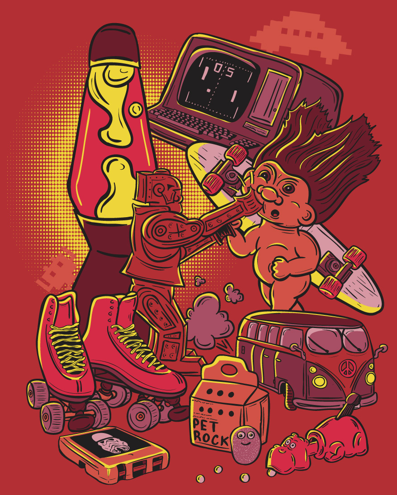
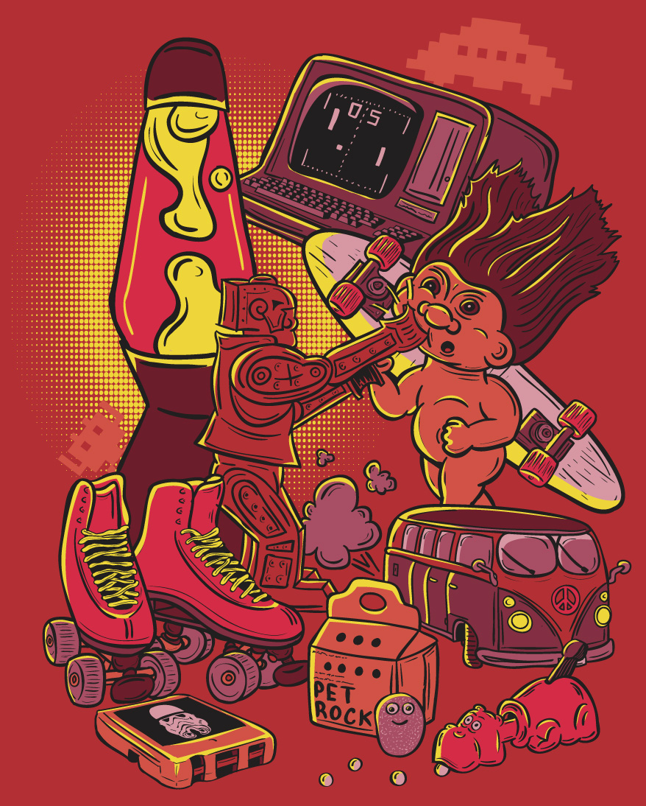
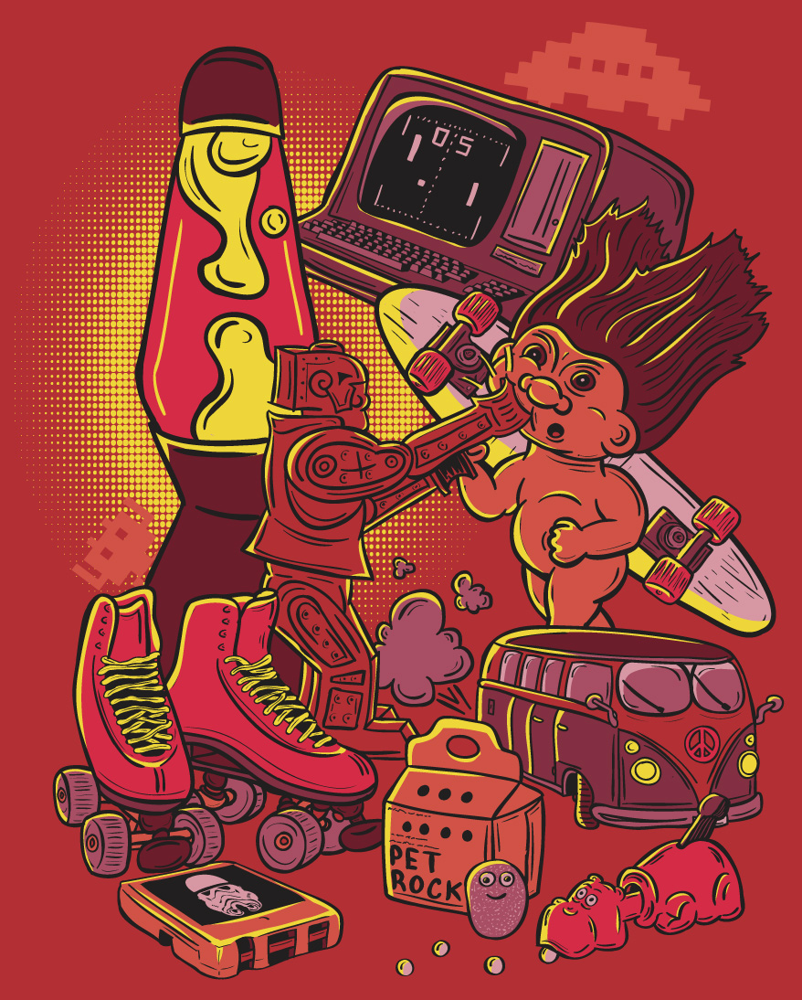
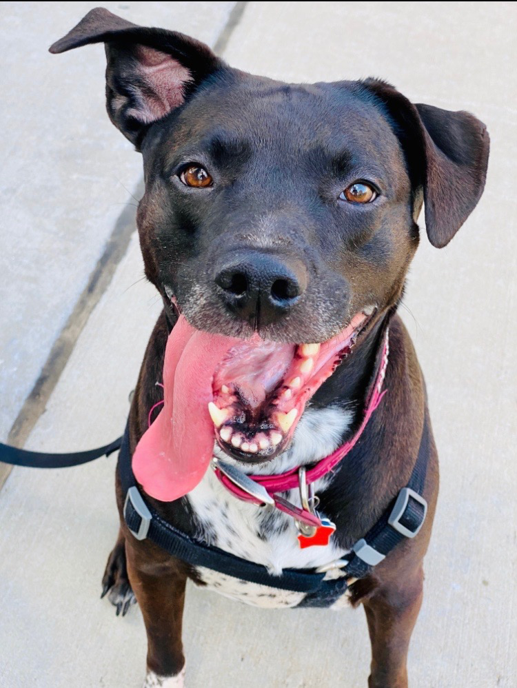

My name is Tristian Davis (he, him). This is just a little bit of information about myself.
I just had my first child in the beginning of last September. We had a beautiful baby girl. It's been a lot of fun and a good learning experience. It was very difficult trying to be a new father and trying to keep up with school as she was born the first week into the trimester. So I am glad the newborn stage is over with.
Growing up my father was a self-employed artist. So from a young age I have always been into everything art related. I like to draw, paint, sculpt, digital art, and just about anything inbetween. I've done art for money, but never really pursued a career in it. I also worked for a screen printing for a bit thinking I would want to do that. But changed my mind. I enjoyed it for small runs of cool stuff, but printing 15,000 of the same thing front and back over and over again got dull real quick.

I enjoy playing video games in my spare time, but not near as much as I used to. Me and my girlfriend typically play a lot of cozy games or survival games. We typically always end up playing Stardew Valley over and over again.
I have one dog, her name is Karliah. She was named after a member of the thieves guild from Skyrim. I got her when she was 4 weeks old. A family out in the country took in a stray dog. It turned out she was pregnant and gave birth to a 8 puppies, and one day the mother never returned. So the family put the pups up on craigslist and I went and got one not realizing they were that young. I had to bottle feed her for a while until she could eat food on her own. I still have her and she is 10 years old now.

I decided to enroll at Atlas because I was just getting tired of working in the food industry. I had been doing it for so long, and when I became a General Manager I just realized I didn't want to do it anymore. And then I heard about Atlas from a coworker that was enrolled, and that just sparked up my interest. I was interested in coding from a young age. And I even sold some really poorly done websites when I was younger. So I thought why not learn how to actually do it. So that's why I chose full-stack. I am interested in learning back end programming, but I definitely lean more into the front end of things and using some creativity and design. Not sure where I want to go with it. I guess I'll figure that out along the way.